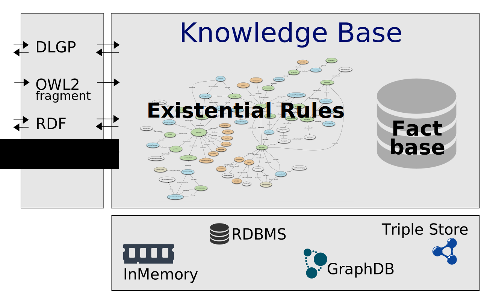

What is Graal?
Graal is a Java toolkit dedicated to querying knowledge
bases within the framework of existential rules, aka
Datalog+/-.
It is an open source library published
under CeCILL
v2.1 license (GPL compatible).
Graal has been designed in a modular way, in order to facilitate software reuse and extension.
It shoud make it easy to test new scenarios and techniques, in particular by combining algorithms.

The main features of Graal are currently the following:
-
a data layer that provides generic interfaces to store
various kinds of data and query them with (union of) conjunctive queries;
- an ontological layer, where an ontology is a set of existential rules;
- a knowledge base layer, where a knowledge base is composed of a fact base (abstraction of the data via generic interfaces) and an ontology;
- algorithms to process ontology-mediated queries:
- query rewriting algorithms, which form the core of Graal techniques; these algorithms use the rules to rewrite the input query into a minimal set (ie union) of conjunctive queries; to compute the answers to a query on a knowledge base, one can evaluate the rewritten query on the fact base;
- forward chaining (or chase) algorithms, which apply rules on the fact base until saturation; to compute the answers to a query on a knowledge base, one can evaluate this query on the saturated fact base; these algorithms implement so-called restricted (or standard) chase and frontier-restricted chase (which behaves like the skolem chase);
-
a rule analyser, which performs a syntactic and structural analysis of an existential rule set; it can be used to check whether the set of rules belongs to a known decidable class, including by partioning this set into subsets that can be processed according to different paradigms while keeping completeness of query answering;
- utility tools to decompose and label rules.
Graal supports the following IO formats:
-
Dlgp (for ‘datalog+’), which extends datalog format;
- OWL 2 as input (subset corresponding to existential rules);
- RDF (data) and SPARQL (subset corresponding to conjunctive queries);
-
RuleML as output.
The existential rule framework
Existential rules are positive and conjunctive rules that allow to assert the existence of not-yet-known individuals. The framework also includes negative constraints and equality rules (these last rules not being processed by Graal yet). It extends plain datalog rules, as well as Horn description logics, as those at the core of OWL 2 tractable profiles (OWL 2 QL, EL and RL).
This framework is particularly relevant to ontology-mediated query answering. Instead of
querying databases, we query knowledge bases composed of facts (data) and
ontological knowledge expressed by existential rules.
Currently, the considered queries are (unions of) conjunctive queries.
[More: A brief overview of the
existential rule framework and its encoding in Dlgp]
The following papers provide introductions to the theoretical foundations of existential rules:
- J.-F. Baget, M. Leclère, M.-L. Mugnier, E. Salvat, On Rules with
Existential Variables:
Walking the Decidability Line, Artificial Intelligence Journal 175 (9-10),
pp. 1620-1654 (2011).pdf
- M.-L. Mugnier, Ontological Query Answering with Existential Rules (Keynote Talk). 5th Int. Con. on Web Reasoning and Rule Systems (RR 2011), LNCS 6902, Springer, pp 2-23
pdf
- M.-L. Mugnier, M. Thomazo, An Introduction to Ontology-Based Query Answering with Existential Rules. Reasoning Web 2014, 10th International Summer School, LNCS 8714, Springer, pp. 245-278, pdf file
Standalone tools built with Graal
In addition to Graal modules, several standalone tools are available
- pure: a query rewriter (basic and compilation-based versions)
- owl2dlgp: a translator from OWL 2 to Dlgp v2
- dlgp2ruleml: a translator from Dlgp v2 to RuleML
- kiabora: an analyser of an existential rule set
- utility-tools: a set of utilities to manage rules
Keep me informed
Subscribe to Graal newsletter